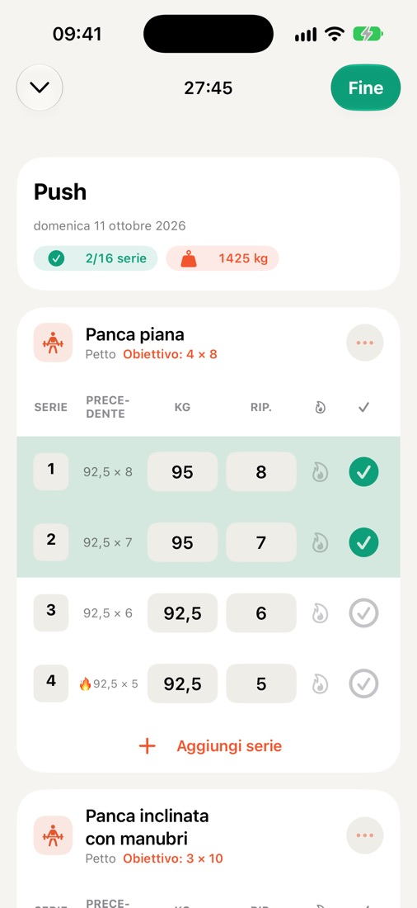
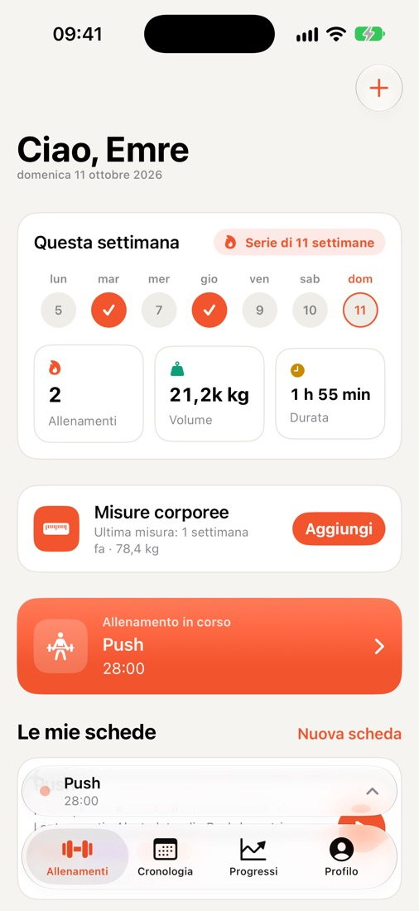
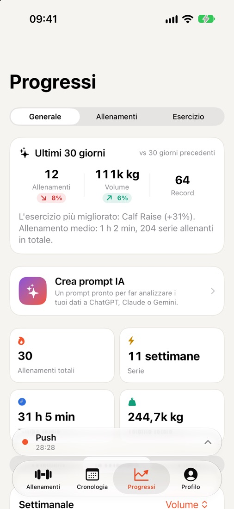
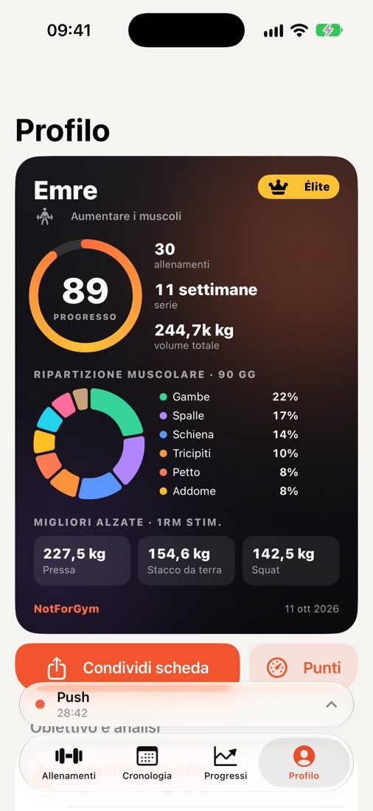
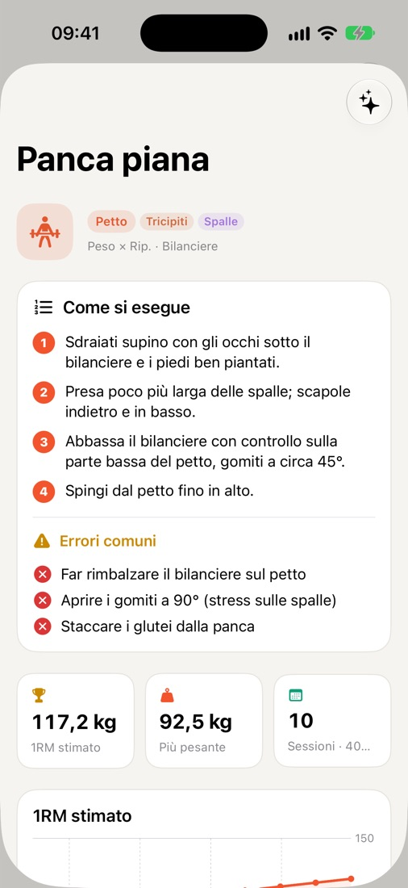
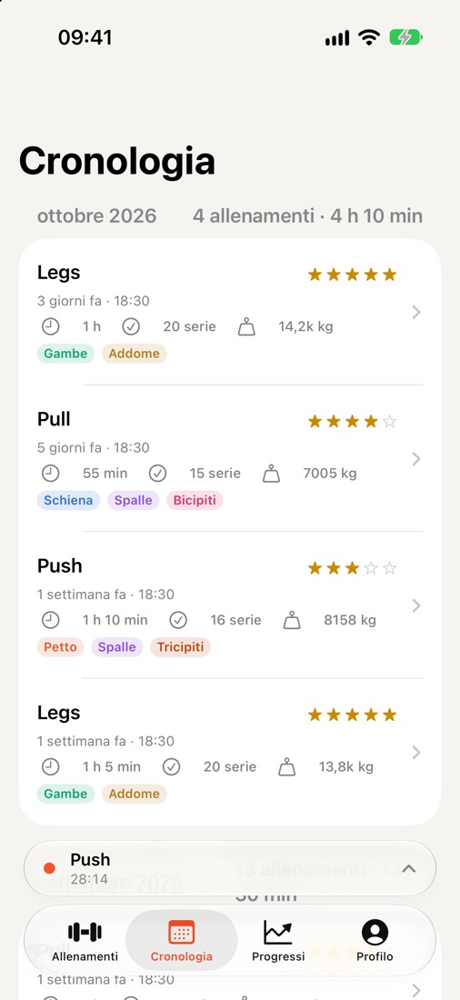

Registra ogni serie.
Guarda ogni progresso.
NotForGym è un diario di allenamento veloce ed essenziale per iPhone e Apple Watch. La sessione precedente è accanto a ogni serie, il timer di recupero gira sulla schermata di blocco e i tuoi progressi diventano record e grafici. Niente account, niente registrazione.

Pensato per il tempo tra una serie e l'altra
Tutto ciò che ti serve in palestra, niente di superfluo.
Registrazione rapida delle serie
Carico e ripetizioni dell'ultima sessione accanto a ogni serie. Serie di riscaldamento, a cedimento, note e difficoltà con un tocco.
Recupero e Attività live
Il conto alla rovescia del recupero è sulla schermata di blocco e nella Dynamic Island: completa una serie o salta il recupero senza aprire l'app.
Apple Watch
Vedi la prossima serie, spuntala e senti un tocco al polso quando il recupero è finito.
Progressi e record
Grafici del volume settimanale, 1RM stimato, record personali e una ripartizione per gruppi muscolari che ti mostra cosa stai trascurando.
Oltre 250 esercizi
Una libreria completa con attrezzatura e muscoli coinvolti, più guide passo passo ed errori comuni per gli esercizi più popolari.
Misure corporee
Tieni traccia di peso e misure nel tempo, con un promemoria settimanale se lo desideri.
Apple Salute
Gli allenamenti completati possono essere salvati in Salute e contano per i tuoi anelli Attività.
Sincronizzazione iCloud
I tuoi dati si sincronizzano tramite il tuo iCloud privato e tornano quando reinstalli l'app o cambi iPhone.
Scheda atleta e widget
Una scheda da condividere con punteggio di progresso, serie di settimane e migliori carichi; disponibile anche come widget per Home e schermata di blocco.
Riepilogo pronto per l'IA
Crea un prompt dai tuoi dati di allenamento e incollalo nell'assistente IA che usi già.
Importa ed esporta CSV
I tuoi dati sono tuoi. Esporta tutto come foglio di calcolo quando vuoi, o reimportalo.
8 lingue
English, Türkçe, Deutsch, Español, Português (Brasil), Français, Italiano e 日本語.
Uno sguardo da vicino





Gratis. Tutte le funzioni.
- Mai annunci durante l'allenamento
- Rimuovi gli annunci con un acquisto, ripristinabile su ogni dispositivo
- Nessun account, nessun abbonamento
Il tuo allenamento resta tuo.
- Nessuna registrazione, nessuna email
- I dati sulla salute non sono mai usati per la pubblicità
- Elimina tutto con un solo pulsante